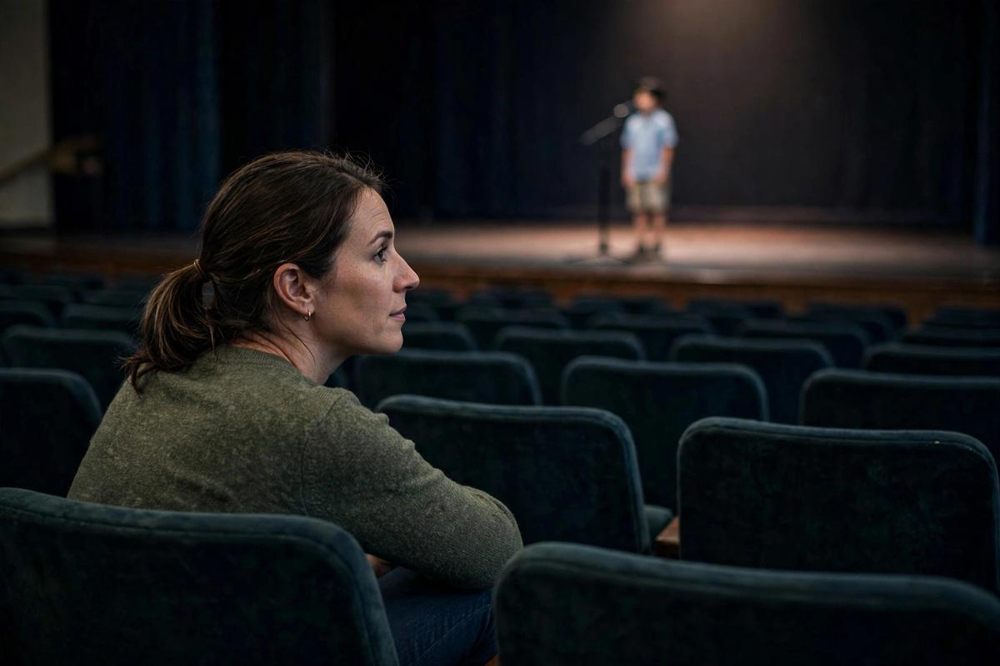

Spelling Bee Survival for Parents: Round After Round From the Auditorium Seats

What is the quietest room in the school, and how long are you expected to sit in it without making a sound? If a child in the family has reached a spelling bee, the answer is the auditorium, and the honest figure is somewhere between ninety minutes and two hours of near silence, broken only by single words, spoken twice, and the occasional bell. Every other event in the school calendar gives a tired parent somewhere to hide: crowd noise, music, applause. The bee gives nothing. It is the one venue where a snore is a solo performance, and it deserves a survival plan of its own.
The quick answer
How long: a bee with 20 spellers and 5 rounds might last 90 minutes to 2 hours, per hosting guidance that prices each turn at about 1 to 2 minutes. How it runs: children spell words aloud, one at a time; spell it right and a speller stays in, spell it wrong and the speller is out, usually to the sound of a bell, until one speller remains. When: school bees usually run in the fall or early winter, first as a classroom bee, then as a school-wide bee among the classroom winners. What is asked of the audience: silence during rounds, no help of any kind, and staying put until a round finishes. The rest of this guide is how to be that audience for two hours without fading in public.
The bee by stage, from the seats
| Stage | What happens | What it feels like in the seats |
|---|---|---|
| Orientation | Rules explained, order set; hosting schedules allow 5 to 10 minutes | The last easy minutes. Read the order of spellers and find a child's place in it |
| Round 1 | Every speller spells; at 1 to 2 minutes a turn, 20 spellers take 20 to 40 minutes | The longest round, and the one where most of the audience's children are still in |
| Middle rounds | Words get harder each round; eliminated spellers leave the rotation, so rounds shorten | The rhythm settles: word, questions, letters, bell or applause |
| The break | Sample schedules build in a short midway break, 10 minutes in the standard two-hour plan | The only sanctioned rest window of the event. Use it as one |
| Final rounds and awards | The last spellers trade words until one misses and the other spells correctly; awards close the event | Short, tense, and genuinely worth being awake for |
One structural fact matters more than any other for the audience: the bee does not pause when a particular child leaves it. Many children go out in the first round, including children who knew the word, because standing up and spelling aloud in front of a room is hard in a way that has little to do with vocabulary. A parent whose speller is out in round one still has most of the event ahead, and the room's etiquette, covered below, expects that parent to sit through it gracefully.
Plan for the full two hours regardless of how the spelling goes. Anything shorter is a pleasant surprise, not a schedule.
Follow along: the audience procedure
The bee hands its audience an attention tool that no recital or assembly offers: every word is a small puzzle, delivered at walking pace, with the answer announced seconds later. Spelling along silently turns passive sitting into a quiet game with a score, and it works because the speller's own procedure builds in thinking time. A speller may ask for the definition, the part of speech, the language of origin, alternate pronunciations, and the word used in a sentence, and none of it counts against them. Each question is a pause the audience can use too.
- Track the order. Spellers go in the same order every round, skipping anyone eliminated. Knowing that a child's turn is four spellers away is the difference between vigilance and drifting.
- Spell each word silently, letter by letter. Commit to a spelling before the child at the microphone does. Being wrong is useful; a missed silent spelling wakes the brain up more reliably than being right.
- Use the questions as checkpoints. When a speller asks for the language of origin or a definition, that is new information arriving on schedule. Guess what the answer will change. A bee watched this way has a plot.
- Never help, even silently and kindly. At one real school bee, the rule is written plainly: a team that receives assistance from the audience is immediately eliminated. Mouthing a letter is not support; it is a disqualification with good intentions.
- Save the reaction for the ruling. The judge rules, the bell does or does not ring, and then applause is welcome. A room that reacts in the right places sounds, to a child on stage, like a room that is listening.
What success looks like: two hours pass in turns of one to two minutes, each one a small contest the parent is quietly playing too, and a child scanning the seats between rounds finds a face that is following the bee, not enduring it.
The midway break is the only nap window
Inside the rounds, there is no honest rest available, and the format explains why. Rounds run unbroken from first speller to last: at one real school bee, the written rules keep every team on stage until the round is completed, so the room's stillness is part of the event's machinery, and the written expectation goes further, with everyone encouraged to stay until the conclusion of their grade's competition, even after elimination. Leaving mid-round means crossing a silent room at its most silent. The break is different. The standard hosting schedule builds one in at the midway point, and ten minutes in a corridor is a real tool: NASA's long-haul research found that pilots who napped 26 minutes improved alertness by up to 54 percent, and the recommended power nap length is 10 to 20 minutes, short enough to avoid the grogginess of deeper sleep. A corridor chair, a vibrating phone alarm, and ten of those minutes will carry a parent through the final rounds in visibly better shape. Even short of sleep, resting quietly with eyes closed is credited by the National Sleep Foundation with improving mood and alertness. In the hall, eyes stay open. In the break, they have earned a rest.
Stay, slip out between rounds, or split the duty
- A child still spelling: stay, obviously and entirely. The final rounds are the shortest and the best of the event, and a champion is crowned in minutes, not hours.
- A child out in round one, bee running long: stay to the end of that round, then judge. Round boundaries are the only clean exits in a silent hall. If the family must go, the end of a round, applause still in the air, is the moment that disturbs nobody and strands no one.
- Two adults, one speller: one attends, one is the reserve. The attending parent takes the midway break properly, out of the hall, because the reserve at home is rested for the drive and the debrief. Splitting the audience seat between two half-tired adults helps no one.
- An evening bee and a long drive: the driver takes the break. Ten rested minutes in the corridor beat any amount of window-down driving afterwards.
The spelling bee asks less of parents than almost any event on the calendar: no costume, no baking, no ticket queue, just presence, silence, and staying until the end. It also asks it in the hardest possible conditions, a warm dark room and a monotone of single words. Meet it with the follow-along game and one honest break, and the two hours resolve into what they were supposed to be: a child, a microphone, a difficult word, and a parent in the seats who heard every letter.
General information only: the nap research summarised here is population-level guidance, not medical advice, and no parent should drive home from an evening event while drowsy. Rest first, or hand over the keys.
— Grace Okafor, Family & Parenting Writer